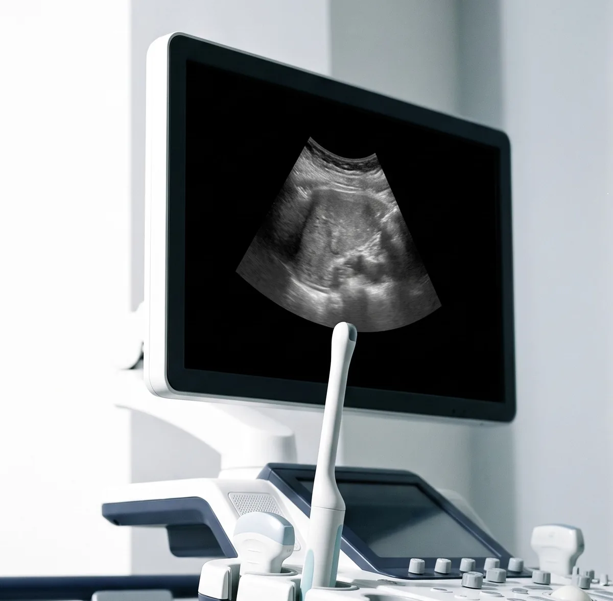
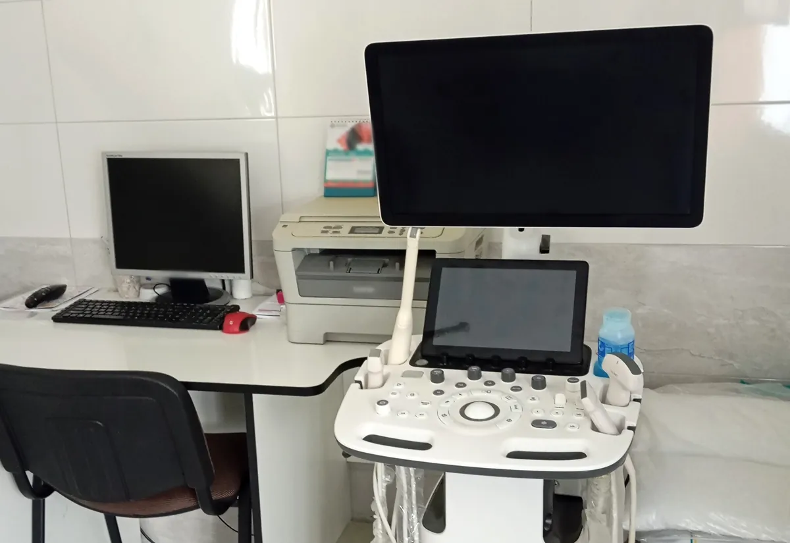
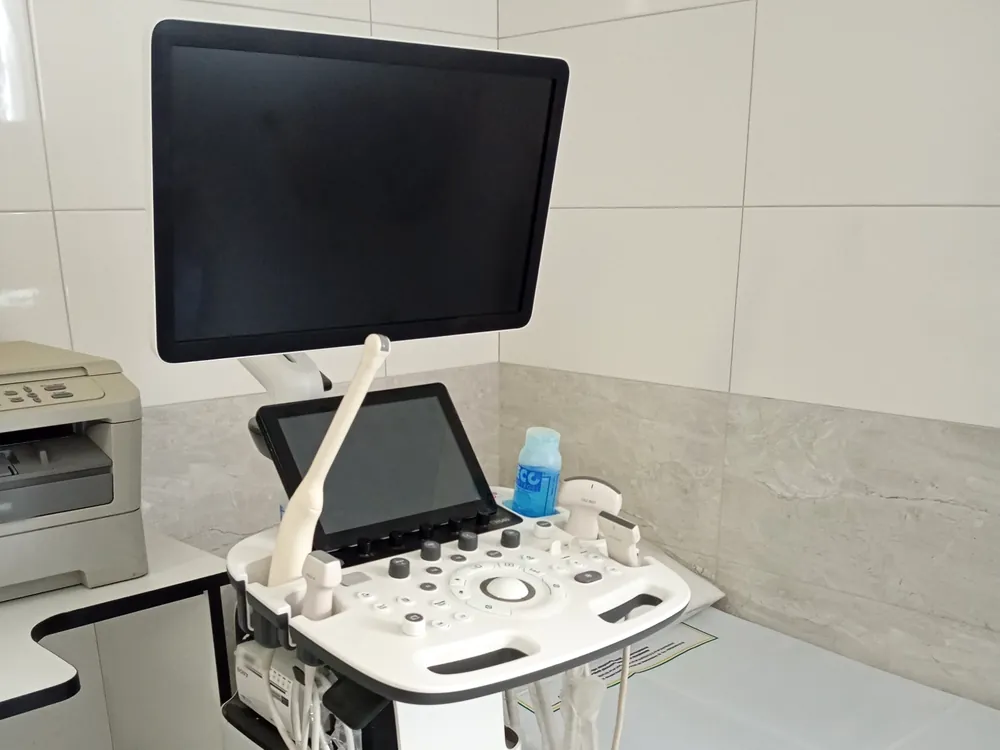
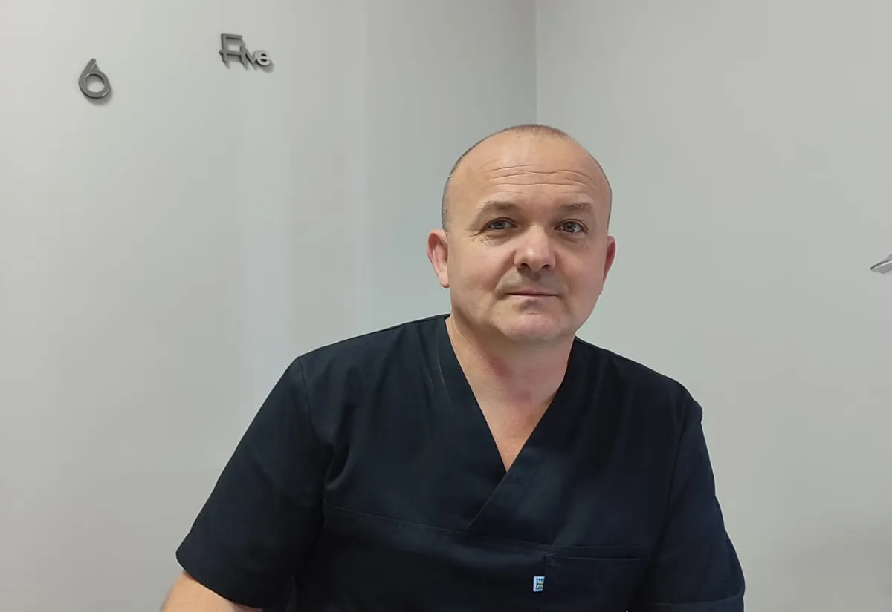

Telegram-бот
Записатися онлайн
Відкрийте бот і напишіть, яке обстеження вас цікавить.
@dr_revkevych_uzd_bot Відкрити Telegram-ботКабінет УЗД · м. Миколаїв, Львівська обл.
Кабінет ультразвукової діагностики у м. Миколаїв Львівської області. Запис — телефоном або через Telegram.
вул. Шептицького, 15 · 2 поверх · кабінет №5

Послуги
Основні напрямки ультразвукових досліджень, які проводяться в кабінеті.
Оберіть потрібний напрямок, щоб переглянути підготовку до обстеження.
Визначення залишкової сечі — коли це входить у відповідне дослідження.
Визначення залишкової сечі — коли це передбачено дослідженням.
Дослідження проводиться через відкрите велике тім’ячко. У дітей старшого віку можливість дослідження залежить від розміру відкритого тім’ячка.
Переважно у віці до 6 місяців.
Місце, де проходить обстеження
Спокійний і зручний простір для проведення ультразвукових досліджень. Прийом проводиться за попереднім записом, без зайвої метушні та очікування.



Прийом веде лікар ультразвукової діагностики Ревкевич Василь Йосипович.
У кабінеті проводяться УЗД для дорослих та дітей за напрямками, представленими на сайті.
Перед візитом можна заздалегідь переглянути рекомендації щодо підготовки до потрібного дослідження.
Перед візитом
Підготовка залежить від виду дослідження. Оберіть потрібне УЗД, щоб переглянути рекомендації.
Спеціальна підготовка не потрібна.
Якщо маєте результати попередніх УЗД або інших обстежень щитоподібної залози, бажано взяти їх із собою для порівняння.
Спеціальна підготовка зазвичай не потрібна.
Якщо маєте результати попередніх досліджень цієї ділянки, бажано взяти їх із собою.
Дослідження бажано проводити натще.
Перед УЗД рекомендовано не приймати їжу приблизно 6–8 годин.
Якщо дослідження заплановане на другу половину дня, можливий легкий ранній прийом їжі з достатнім інтервалом до обстеження.
Для ізольованого УЗД нирок спеціальна підготовка зазвичай не потрібна.
Якщо одночасно досліджується сечовий міхур, він повинен бути наповнений.
Дослідження проводиться з наповненим сечовим міхуром.
Приблизно за 1 годину до обстеження випийте 0,5–1 л негазованої води та, за можливості, не спорожнюйте сечовий міхур до УЗД.
Для дослідження потрібен наповнений сечовий міхур.
Приблизно за 1 годину до УЗД випийте 0,5–1 л негазованої води та, за можливості, не спорожнюйте сечовий міхур до дослідження.
Для трансабдомінального дослідження передміхурової залози та сечового міхура потрібен наповнений сечовий міхур.
Приблизно за 1 годину до УЗД випийте 0,5–1 л негазованої води та, за можливості, не спорожнюйте сечовий міхур.
Якщо потрібно визначити об’єм залишкової сечі, спочатку проводиться дослідження з наповненим сечовим міхуром, після його спорожнення виконується повторне вимірювання.
Спеціальна підготовка не потрібна.
Якщо маєте результати попередніх УЗД або інших обстежень, бажано взяти їх із собою.
Спеціальна підготовка не потрібна.
Якщо маєте результати попередніх УЗД, мамографії або інших обстежень молочних залоз, бажано взяти їх із собою для порівняння.
Трансабдомінальне
Потрібен наповнений сечовий міхур.
Приблизно за 1 годину до дослідження випийте 0,5–1 л негазованої води та, за можливості, не спорожнюйте сечовий міхур.
Трансвагінальне
Наповнення сечового міхура не потрібне.
Перед дослідженням сечовий міхур бажано спорожнити.
Час дослідження може залежати від клінічного завдання — його можна уточнити під час запису.
Підготовка залежить від терміну вагітності та способу проведення дослідження.
Для трансвагінального УЗД наповнений сечовий міхур зазвичай не потрібен.
Якщо для конкретного дослідження потрібен наповнений сечовий міхур, це можна уточнити під час запису.
Спеціальна підготовка не потрібна.
Бажано, щоб дитина під час дослідження була спокійною.
Дослідження проводиться через відкрите велике тім’ячко. Можливість повноцінної нейросонографії залежить від розміру акустичного вікна.
Якщо маєте результати попередніх УЗД або інших обстежень, бажано взяти їх із собою.
Спеціальна підготовка не потрібна.
Для дослідження бажано одягнути дитину так, щоб можна було легко звільнити ділянку кульшових суглобів.
Якщо маєте результати попередніх обстежень, бажано взяти їх із собою.
Спеціальна підготовка зазвичай не потрібна.
Бажано, щоб шия була вільною від одягу та прикрас, які можуть заважати проведенню дослідження.
Якщо маєте результати попередніх досліджень судин, бажано взяти їх із собою для порівняння.
Запис на УЗД
Telegram-бот
Відкрийте бот і напишіть, яке обстеження вас цікавить.
@dr_revkevych_uzd_bot Відкрити Telegram-ботТелефон
Допомога
Зателефонуйте або напишіть у Telegram — уточнимо потрібний вид УЗД та підготовку.
Як нас знайти
Як дійти до кабінету
Будинок №15
вул. Шептицького, 15
2 поверх
Підніміться на другий поверх
Кабінет №5
Кабінет ультразвукової діагностики